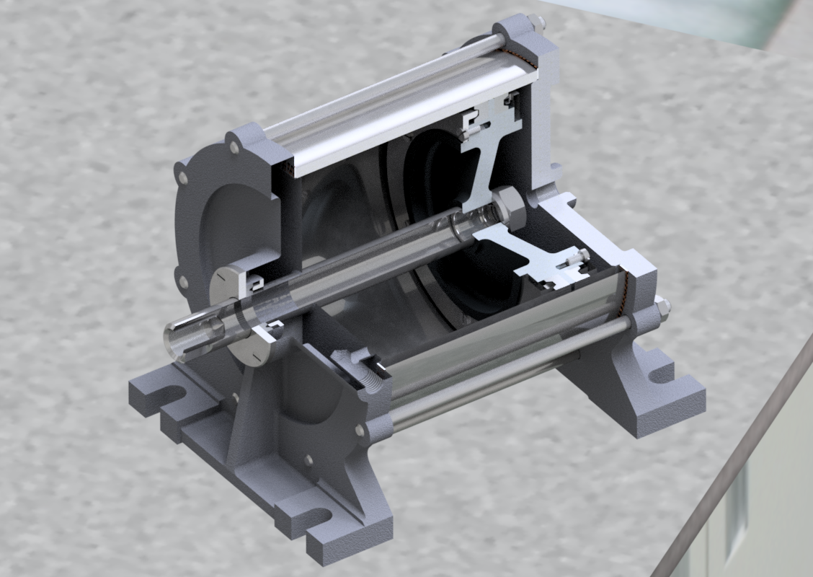

Тут будет сайт с 3D-моделями
Обрабатываемые запросы
-
GET-запрос на корневой путь '/' возвращает отсылает к этой странице
-
GET-запрос на путь '/v1' возвращает приветствие
-
GET-запрос на '/v1/stats' возвращает небольшой фрагмент в виде html таблицы, где в одной колонке user-agent, а во второй количество запросов.
-
GET-запрос на '/v1/dbcomments' возвращает все документы из колллекции в базе данных
-
GET-запрос на '/v1/dbcommets/6452bb711b3070922cca8879' возвращает жокумент из базы данных с таким id
-
POST-запрос на '/comments' возвращает данные из комментария в http-файле
-
POST-запрос на '/v1/author?apiKey=getauthorised' возвращает ответ, что авторизация прошла успешно
-
POST-запрос на '/v1/login' возвращает приветствие с именем пользователя
-
POST-запрос на '/v1/dbcomments' добавляет в коллекцию базы данных документ
